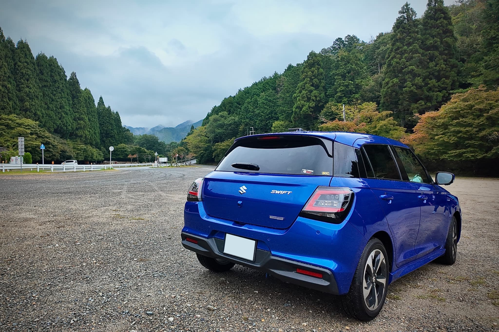
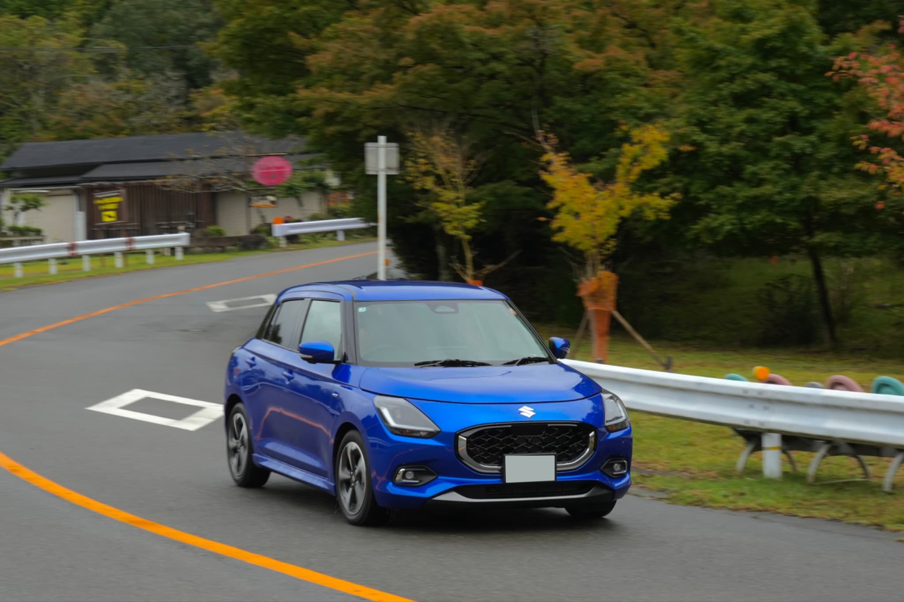

#愛車撮影 #ドライブ #走行撮影
Autumn Drive Portrait: Arashiyama-Takao
2025.10.19Sunny Afternoon
駐車場でのじっくりとしたポージング撮影と、公道での走行シーンを捉えるローリングショットの2パターンで、マシンの持つ多面的な魅力を2時間にわたり凝縮。 ロケーションの選定から走行ルートの打ち合わせまで、オーナー様のこだわりを形にするオーダーメイドな撮影を提供します。




特別な日だけでなく、こうした日常のひとコマを美しく残すお手伝いをしています。